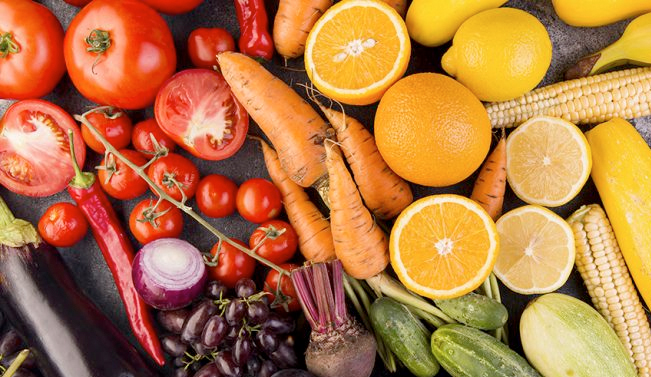

QUAL A DIFERENÇA ENTRE VEGETARIANO, VEGANO OU FLEXITARIANO?
Se você é empreendedor ou apenas ligado nas mudanças do mundo nos últimos anos, com certeza já percebeu que a tendência de alimentação plant based, ou seja, com ingredientes baseados em origem vegetais, é cada vez maior. Você sabe a diferença entre vegano, vegetariano e flexitarianos? Seja pela necessidade por conta de intolerâncias ou alergias.
No mundo da alimentação consciente, termos como vegetariano, vegano e flexitariano são frequentemente usados, mas suas distinções nem sempre são claras. Vamos desvendar esses conceitos:
Vegetariano: Um vegetariano exclui carne de sua dieta, incluindo carne vermelha, aves, peixe e frutos do mar. No entanto, muitos vegetarianos ainda consomem produtos derivados de animais, como laticínios e ovos.
Vegano: Os veganos vão além dos vegetarianos, eliminando não apenas carne, mas também todos os produtos de origem animal, incluindo laticínios, ovos, mel e qualquer alimento que contenha ingredientes de origem animal. Além disso, muitos veganos também evitam produtos não alimentares que envolvem o uso de animais, como roupas de lã ou couro.
Flexitariano: O flexitarianismo é um estilo de alimentação que enfatiza principalmente alimentos vegetais, mas permite uma quantidade limitada de carne e produtos de origem animal em sua dieta. Os flexitarianos geralmente consomem carne ocasionalmente, optando por refeições predominantemente baseadas em plantas na maior parte do tempo.
Cada um desses estilos de alimentação tem seus próprios benefícios e considerações éticas, e a escolha entre eles geralmente depende das preferências pessoais, necessidades dietéticas e valores individuais.
Independentemente do caminho escolhido, todos esses estilos promovem uma maior conscientização sobre a fonte dos alimentos e o impacto que nossas escolhas alimentares têm no meio ambiente, na saúde e no bem-estar animal.